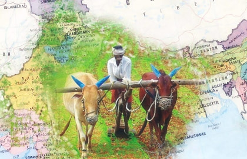
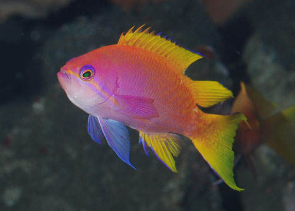

To make agriculture sustainable, the grower has got to be able to make a profit.
AGRICULTURE
Agriculture plays a crucial role in the life of an economy. It is the backbone of our economic system. Agriculture not only provides food and raw material but also employment opportunities to a very large proportion of population.

"Agriculture is our wisest pursuit, because it will in the end contribute most to real wealth, good morals, and happiness."
ANIMAL HUSBANDARY
Animal Husbandary: Animal husbandry helps us in developing high yielding breeds of various domestic animals through cross breeding. Thus, animal husbandry increases the availability of various food products such as milk, eggs and meat, which are obtained from domestic animals.Animal husbandry helps in systematic disposal of animal wastes. Thus, it helps in maintaining healthy environment.

CLIMATE CHANGE
Climate Change: Climate change today is less of a natural process. It is rapidly occurring due to the ill effects of human actions responsible for disturbing and harmful out comings such as global warming, greenhouse effect, urban heat, coal industry etc. Climate change is not only changing the overall weather scenario, but has larger and harmful effects. Some of these include: melting of polar regions, occurrence of new diseases and permanent inhibition in growth of certain plants essential for human survival.
GLOBAL WARMING
Global Warming: Global warming is another environmental issue which is increase in earth’s temperature due to effect of greenhouse gases called carbon dioxide, methane, water vapor and other gases. These gases possess heat trapping capacity that are needed to create greenhouse effect so that this planet remains warm for people to survive. Without these gases, this planet would turn be cold for life to exist.
During past several decades, the accumulation of greenhouse gases have grown rapidly, which means more heat gets trapped in the atmosphere and few of these gases escapes back into the space. These gases heat up the earth’s surface and this results in global warming. According to Environmental Protection Agency (EPA) reports, the earth’s temperature has increased by 0.8 degrees Celsius over the past century. Global warming is a serious public health and environmental concern. Global warming can have long lasting effects which can result in melting of glaciers, climate change, droughts, diseases and increase in hurricanes frequency.
MORE
INDUSTRIAL AND HOUSEHOLD WASTE: At present, tons of garbage is produced by each household each year. Items that can be recycled are sent to local recycling unit while other items become a part of the landfills or sent to third world countries. Due to increase in demand for food, shelter and house, more goods are produced. Most waste is buried underground in landfill sites. It affects human health, degrades soil quality, effects wildlife, cause air pollution and results in climate change.
ACID RAIN: Acid rain simply means rain that is acidic in nature due to the presence of certain pollutants in the atmosphere. These pollutants come in the atmosphere due to car or industrial processes. Acid rain can occur in form of rain, snow, fog or dry material that settle to earth. Acid rain may cause due to erupting volcanoes, rotting vegetation that produce sulfur dioxide and fires, bacterial decomposition and lightening generate nitrogen dioxide.
Ozone Layer Depletion: Ozone layer is a layer of gas that sits 25-30 km above earth’s surface. It mainly contains contain ozone which is a naturally occurring molecule containing three oxygen atoms. This layer is present in the stratosphere and prevents too many harmful UV (ultra violet) radiations from entering the earth. Ozone layer is capable of absorbing 97-99% of the harmful ultraviolet radiations that are emitted by sun.